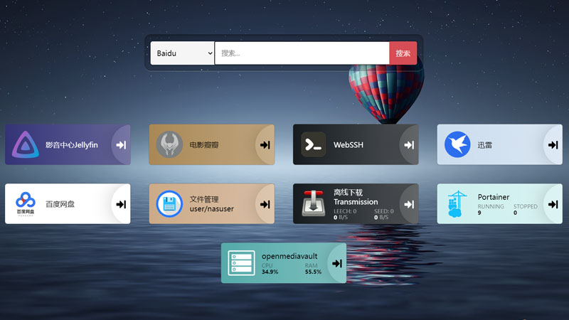

超低成本私有NAS
用OMV5打造轻量级家庭云服务器
花最少的钱，整最嗨的活！

序言：
你想不想...？- 家里的电影，一人下载，全家同享。无论是手机、电视、电脑，打开就能看硬盘里下载好的电影？打造自己的家庭影音中心。
- 想下载电影、游戏等等，又不想开电脑，直接云下载？哪怕在外边，也能手机操控主机下载电影。
- 手机相册/文件自动云备份到硬盘上？
- 在单位、在外地也能随时访问、操控家里的文件。
- ...
硬件配置：咸鱼买的二手迷你主机（只有主机没有显示器）。看外观应该是ACEPC T11，Z8350处理器，4G内存64G固态硬盘，千兆网口双频wifi5+2.4G 一共268元。里面插了一个笔记本500G旧硬盘。全部加起来成本300块钱出头。
系统：使用OpenMediaVault5（下文简称OMV5）系统作为NAS系统。为什么选OMV5？因为相比黑群晖之类的D版，用起来更省心，而且OMV系统本身免费，占用资源也不大，可以随时折腾。缺点嘛，系统偶尔会有一些毁灭性的BUG难以解决，网上资料也比较少，可能需要重装系统。所以最好电脑上用虚拟机同步装一遍OMV5系统（分配空间不要小于10G，否则装几个DOCKER就满了），需要捣鼓什么新东西，先在虚拟机上测试一遍，确保成功后再安装在真机上。
OMV5安装
首先从官网下载系统镜像https://www.openmediavault.org/download.html，选择5版本（Old Stable），或者6版本。5和6的区别：OVM5/6系统需要安装OMV-Extras插件后，才能安装图形化的DOCKER和Portainer（NAS里几乎所有的要用的软件功能都需要在DOCKER中运行）管理界面。5可以本地安装OMV-Extras，而6只能通过github连网安装。国内github很不稳定，大概率无法访问。所以还是使用5比较保险。
安装步骤：
- 给NAS主机插上显示器（可以是电脑显示器、电视机、或是视频采集卡连手机等），等装完系统后，就可以拔掉显示器了。
- 使用烧录软件把下好的系统镜像烧录到U盘中，并插入NAS主机。
- 重启NAS主机，把BIOS设置一下（不同机型开机可能需要按F2/F8/DEL），UEFI/Legacy Boot这一项，设置成“Legacy Only”；Security Boot改为Disable。最后设置成U盘启动。
- 按提示安装系统即可（具体安装图文教程直接在搜索引擎中找"OMV安装"即可，这里不再赘述，只讲一些避坑），语言就直接选中文就行，连网方式用wifi和网线均可。建议用网线，这样网速会快一些。安装时需要连网安装，所以有时可能会比较慢，耐心等待。最后安装完毕会提示拔出优盘，点击确认重启，点完确认需要等一会才会重启，千万不要直接等不及手动关机...
- 安装重启后在控制台输入用户名密码（root/*****）登录，使用ip addr命令查看本机ip，比如说本机ip是192.168.1.999，这样就可以在同局域网的其他设备中通过：http://192.168.X.X访问nas的管理界面了。
- 在局域网其他设备浏览器中输入nas的ip，例如：http://192.168.X.X，可进入OMV的管理界面，并用admin/openmediavault登录。登录后，先修改管理界面的登录密码（这个密码和控制台的root密码是两码事）。然后进行一些初始设置。
- 挂载硬盘：左边菜单“存储器-磁盘”中，添加移动硬盘（可能需要格式化），然后在“存储器-文件系统”中挂载该磁盘
- 添加共享文件夹和用户：在左边菜单“访问权限管理-用户”中，添加一个用户，可以给家人用。只需设置名称和密码。然后在“访问权限管理-共享文件夹”中，按需添加需要共享的文件夹。名称谁便填，设备选移动硬盘，路径是指在移动硬盘中的位置，例如“/”，就代表共享整个移动硬盘。“/movies”就代表共享移动硬盘里的movies文件夹。
- 开启共享协议和远程连接SSH：共享方式有FTP、SMB、NFS，一般开启SMB就够了，例如开启SMB协议并共享了movies文件夹，在家里电脑上如果想访问该文件夹，则在“此电脑”上点右键，“映射网路驱动器...”输入(区分大小写)：
\\192.168.X.X\movies
然后开启SSH，开启这个以后，就可以通过SSH工具或者后边讲的网页版SSH远程操控控制台进行系统操作了。 - 安装DOCKER:
- 方案1：首先要安装OMV-Extras.org插件，下载插件文件到电脑上，在网页管理面板系统-插件-上传Extras文件，刷新后在插件列表中找到Extras进行安装。安装后左侧目录中找到OMV_Extras中，找到Docker标签页，点击下边docker的下拉按钮，点击安装。同样的方式找到Pointer点击安装。最后并点击OpenPointer进入Docker的图形化管理页面。
-
方案2：如果家里网络能连接到github的话，在控制台用root权限执行以下命令也可以：
wget -O - https://github.com/OpenMediaVault-Plugin-Developers/packages/raw/master/install | bash
- 方案3：在控制台直接安装docker，以后操作均使用命令行，不使用图形化界面（也可以，docker命令比较简单，难度不大。本方案兼顾了想装OMV6但是脸部是github的问题）。
安装docker
sudo apt-get install -y docker.io
启动docker服务
systemctl start docker
设置开机启动
systemctl enable docker
查看状态
systemctl status docker
停止服务（备用）
systemctl stop docker
其他常见命令：
docker --help 查看使用说明
docker ps 查看容器列表
docker images 查看镜像列表
docker rmi xxxx 删除xxxx镜像
- 其他：可以试试安装Casa OS（教程自己找。CasaOS也自带Docker，可以省去本教程上文中docker的安装过程）
如何进行NAS主机的文件管理、如何用NAS下载电影、如何打造家庭影音中心等，详见下一期：家庭NAS搭建2-DOCK常用容器安装。
PS：先别拔显示器，看下篇文章，安装SSH后再拔。